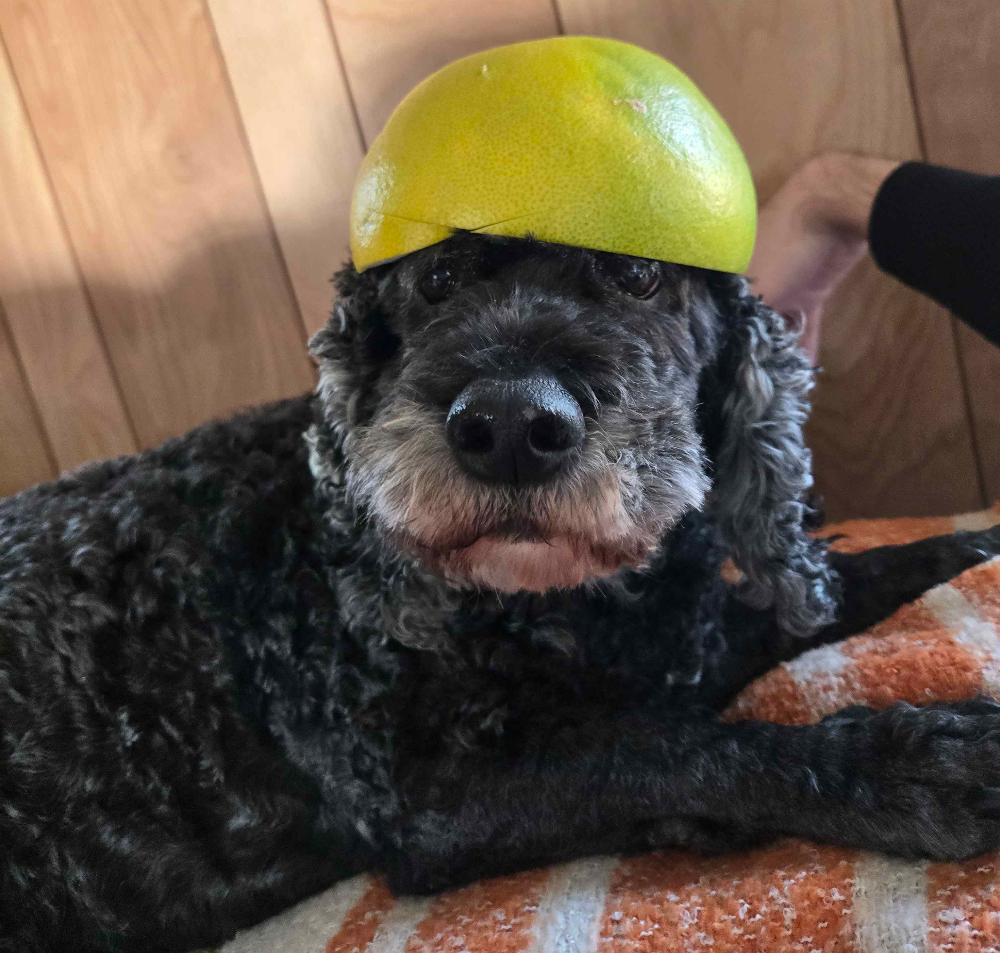

Overview
We made another game!!! Again, I wasn't too happy with it...
The game is called What a STEEL! (it's a pun on the phrase "What a steal!" and the fact that you're a cyborg fighting robots). To learn more about it (and play it!), just check out the page here.
The tl;dr is that it's a Roguelike where you can't trust the Shopkeepers to tell you the truth about the items they sell. You can either trust them and hope for the best, or you can try to find out the truth about the items yourself. The reason we did this was for the theme: "Trust No One".
This was our first time making real time combat in a game (Kob did 99% of the actual combat though lol). Maybe he has more to say about that, but I do think it feels good and will be valuable for us in the future.
The Time Struggle
One of the things that went wrong with this game was that we ran out of time. I think our biggest problem in the last game jam was time management. This time, I definitely think we did better, but I lost an entire day of development due to having to put my dog down. His name was Lucky and he's actually in the game if you can spot him. Below is a picture of him with a pomelo on his head.

Outside of that, I think we generally have a harder time during longer jams. I know that I personally don't work as hard or am as driven because I keep thinking we have more time than we actually do. This is something I've realized when we made Delta-T and tried to do better on this jam. And ultimately I do think I generally did better even with the circumstances. It's just something I'll have to keep improving at as we go.
The Art Struggle
I greatly believe one of the things we struggle with the most is art and integrating the art into the game. Not in the sense that we don't have good art and animations, but just in the sense that we always run out of time when implementing it. If you go back and look at all of our previous games since Forgotten Paths, they all have something like this.
- There are no animations in Massaquerade
- Delta-T has a large map with a big canvas, leading to a lack of detail.
- What a STEEL! uses two different palettes, art styles, and varying quality overall.
Looking back, I think this is something we did right in Forgotten Paths. We had 1 player, 1 enemy, and a simple tileset. We had a small art scope overall and that led a better product. I think having a smaller art scope is something we need to focus on in the future.
The lesson you refuse to learn is the one that will keep repeating itself until you do. - IDK lol
I think the goal for us should be quality first. I think most players likely wouldn't even care if you're a box jumping around if it feels good to jump around as a box. It's often more fun to jump around as a box and have it feel good than a cooler character that is unresponsive, inconsistent, and just feeling lacking.
We plan to participate in the Godot Wild Jam 100 in December so we'll see if we can apply this lesson then...
Conclusive Thoughts
This is my least favorite game we've made. A lot of it is just I wasn't happy with the final state the game resulted in as well as the struggles we had during development.
I haven't really been happy with the last 2 games we've made (What a STEEL! and Delta T). I think the biggest lesson I'm learning is that we need to manage our scope (specifically in terms of art as well as dialogue if it exists) a lot better. A small game that is polished and does one thing really well is more fun and feels better to play than a large game with a ton of half completed features.
That's about all for now. Until next time...